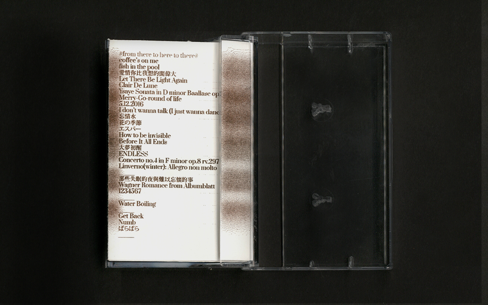
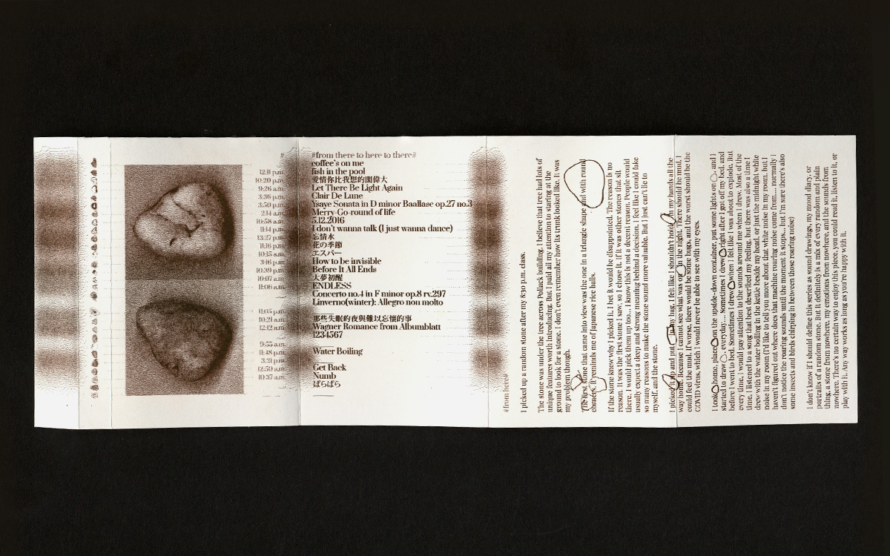
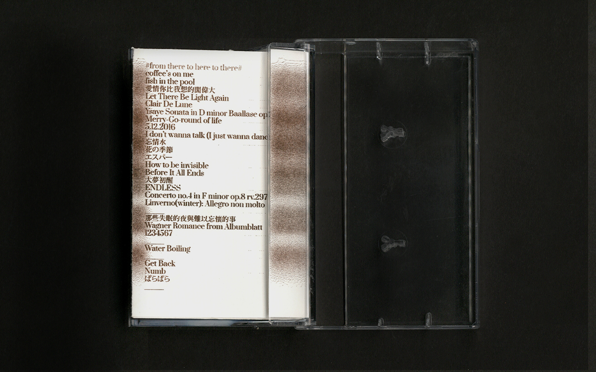
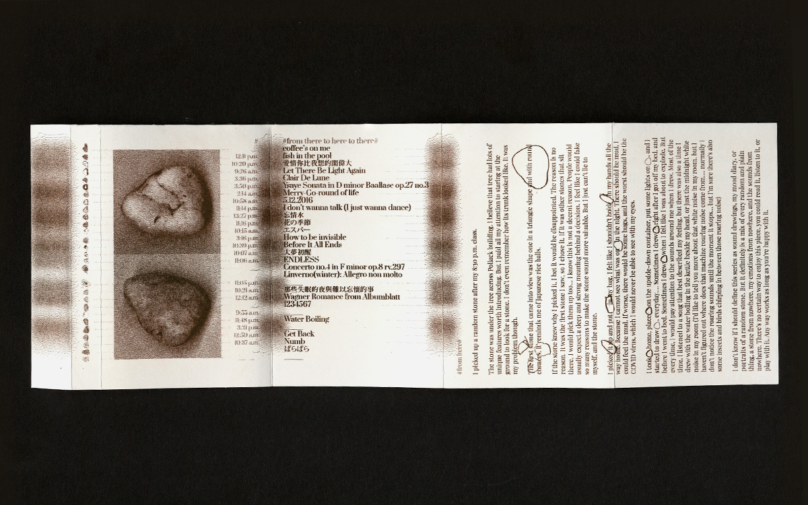

Music Video for The Random Stone
Artist book, September 2021.
Risograph, Frame by Frame Drawing,
5.5 × 8.5 in.
This casette is a music video for the random stone I picked up after my 8:30 p.m. class.
There’s no certain way to enjoy this piece, you could read it, listen to it or feel it with your hands. All the photos and drawings are the life size of the stone. I think the stone wouldn’t mind how it is viewed, heard and touched because it didn’t refuse when I picked it up. It was silent like a moon behind heavy clouds. Maybe it was screaming silently inside itself, but there’s no way I can turn the stone inside out. So I will just give this overbearing conclusion.


 


